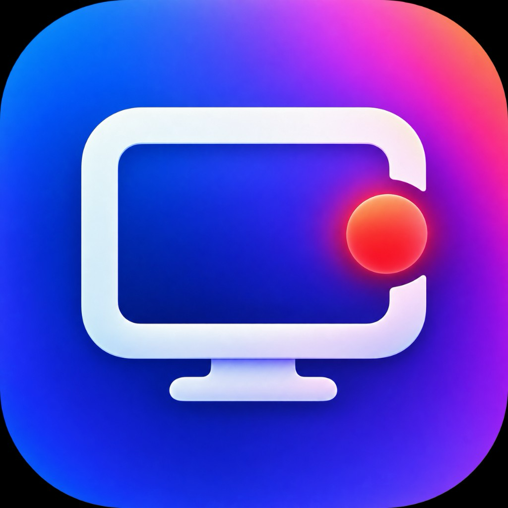

Drück auf Aufnahme.
Display, Fenster oder nur ein Ausschnitt. Dazu deine Stimme, Systemton und auf Wunsch deine Kamera.
DEIN MOMENT. DEIN AUSSCHNITT.
screnivaDu hast etwas zu zeigen.
Mach einen Screencast, der hängen bleibt.
Ein guter Tag beginnt mit einer klaren Idee.
Produktdemo, Tutorial oder ein kurzes „So geht’s“ fürs Team: Screniva bringt Aufnahme und Schnitt zusammen. Damit aus dem, was du zeigst, etwas wird, das ankommt.
Display, Fenster oder nur ein Ausschnitt. Dazu deine Stimme, Systemton und auf Wunsch deine Kamera.
DEIN MOMENT. DEIN AUSSCHNITT.Schneide die Pause raus. Rück das Wichtige in den Fokus. Gib deiner Aufnahme einen eigenen Look.
WENIGER UMWEGE. MEHR AUSSAGE.Exportiere für YouTube, Social oder dein Team. Mit Untertiteln und Kapiteln, wenn du sie brauchst.
BEREIT FÜR DEIN PUBLIKUM.Dein Bildschirm erklärt das Was.
Du erklärst das Warum.
Mit dem iPhone als Facecam und einem Picture-in-Picture, das du im Schnitt frei gestaltest.
Ein Ort für das, was du als Nächstes vorhast.
Wähle dein iPhone über Continuity Camera als Facecam – direkt in Screniva.
Bildschirm und Facecam werden zusammen aufgenommen und als eigene Spuren abgelegt.
Verschiebe dein Kamerabild, passe seine Größe an und gestalte die runde Maske im Editor.
Voraussetzung: iPhone und Mac sind für Continuity Camera eingerichtet.
Gleicher Film. Neue Untertitel.
Wähle eine Sprache und sieh den Unterschied.
Aus einzelnen Takes wird eine runde Geschichte.
Entdecke die Werkzeuge – direkt am Beispiel.
Aus wichtigen Momenten werden Kapitel. Beim Video-Export kommen die Zeitmarken als fertiger Text mit.
Vom ersten Gedanken bis zum nächsten Schritt.
Produktdemo.mp4Dein fertiges Video
✓Produktdemo.chapters.txtBereit für die YouTube-Beschreibung
✓Video auf deiner Plattform hochladen.
Auf YouTube den Kapiteltext einfügen.
Animierte Beispielsequenz · Kapitel werden in Screniva gesetzt. Die Veröffentlichung erfolgt auf deiner Plattform.
Musik wird unter deinen Voiceover-Clips leiser. So bleibt deine Erklärung im Vordergrund.
Verdecke sensible Bereiche deiner Aufnahme mit einem Blur-Overlay. Genau dort, wo du es brauchst.
Farben, Schrift und Rahmen verändern die Wirkung. Eine Geschichte. Drei ganz eigene Looks.
Native App. Lokale Projekte. Aufnahme und Schnitt direkt auf deinem Mac.
05 / WEITER IN PREMIERE PRO
Screniva übergibt deine Aufnahme als editierbare Sequenz. Schnitte, Ton, Zooms und Bild-in-Bild bleiben bearbeitbar – Untertitel und Kapitel kommen direkt mit.
Komplexe Masken und Spezialeffekte werden als Marker übergeben – für den gezielten Feinschliff in Premiere Pro.
Jetzt musst du sie nur noch zeigen.
Screniva für Mac laden